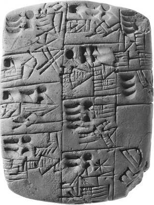
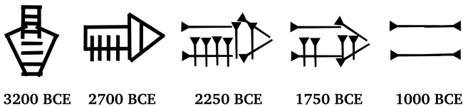
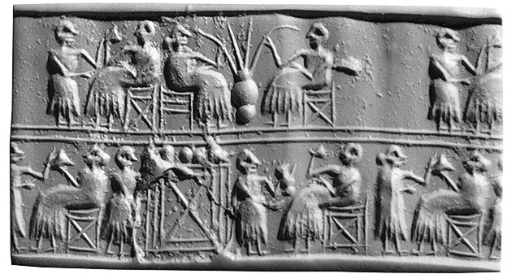

История в бокалах . Цивилизованное пиво.


Не знать пива – не знать радости.
Рот совершенно довольного мужчины
всегда заполнен пивом.
Городская революция
Первые города мира возникли в Месопотамии, в долине Тигра и Евфрата, что примерно соответствует современному Ираку. Большинство жителей этих городов были земледельцами, которые жили за городскими стенами и каждое утро уходили возделывать свои поля.
Первыми настоящими горожанами были ремесленники. Жизнь в городах бурлила, колесные повозки передвигались по заполненным улицам, люди покупали и продавали товары на оживленных рынках. Совершались религиозные церемонии, регулярно проходили государственные праздники. Даже в пословицах того времени сквозит знакомая нам усталость от городской суеты: «Тот, у кого много серебра, может счастливо жить, тот, у кого много ячменя, тоже может счастливо жить, а тот, у кого нет ничего, может счастливо спать».
Точная причина, по которой люди предпочли жить в больших городах, а не в маленьких деревнях, неизвестна. Вероятно, это было связано с несколькими взаимосвязанными факторами: например, желанием быть ближе к религиозным или торговым центрам. В случае с Месопотамией серьезной мотивацией могла служить безопасность. Из-за отсутствия естественных границ (Месопотамия, по сути, большая открытая равнина) она подвергалась регулярным вторжениям и нападениям. Примерно около 4300 года до н. э. деревни начали объединяться в большие поселения, позже превратившиеся в города, окруженные полями и ирригационными каналами. К 3000 году до н. э. в самом крупном городе Урук, окруженном полями в радиусе 15 километров, проживали около 50 тысяч человек. К 2000 году до н. э. почти все население юга Месопотамии было сосредоточено в нескольких десятках крупных городов-государств, включая Урук, Ур, Лагаш, Эриду и Ниппур. Позже инициативу перехватил Египет. Мемфис и Фивы стали крупнейшими городами в мире.
Это два самых ранних примера цивилизации и два разных пути развития общества. Политическая система, созданная в Египте, позволила египетской культуре оставаться неизменной в течение 3000 лет, в то время как Месопотамия была ареной постоянных политических и военных потрясений. Но в одном они были похожи: обе культуры стали возможными благодаря избытку сельскохозяйственной продукции, в частности зерна. Этот излишек не только освободил небольшую элиту администраторов и ремесленников от необходимости производить собственную еду, но и финансировал широкомасштабные проекты – строительство каналов, храмов и пирамид. Зерно, составлявшее основу рациона как в Египте, так и в Месопотамии, служило универсальным средством обмена. Оно было чем-то вроде съедобных денег, потребляемых в твердой и жидкой форме, в виде хлеба и пива.
Напиток цивилизованного человека
Рукописная история пива начинается в Шумере, регионе на юге Месопотамии, где письменность возникла около 3400 года до н. э.
О том, что употребление пива было признаком цивилизованности среди месопотамцев, можно судить по отрывку из «Эпоса о Гильгамеше», одному из старейших произведений мировой литературы. Гильгамеш был шумерским царем, правил около 2700 года до н. э. История его жизни описана в шумерских сказаниях и аккадском эпосе.
В отрывке речь идет о приключениях Энкиду, друга Гильгамеша. Дикарь, живший в пустыне, знакомится с молодой женщиной, которая приводит его в деревню. Это первая ступень цивилизационной лестницы, ведущей к городской культуре. Перед Энкиду положили еду и поставили пиво. Женщина кормила его, приговаривая:
– Ешь хлеб, Энкиду, – то свойственно жизни,
Сикеру[1] пей – суждено то миру!
Не умел Энкиду питаться хлебом,
Питью сикеры обучен не был.
Досыта хлеба ел Энкиду,
Сикеры испил он семь кувшинов.
Взыграла душа его, разгулялась,
Его сердце веселилось, лицо сияло[2].
На первобытную природу Энкиду указывает отсутствие знаний о хлебе и пиве. В Месопотамии потребление этих продуктов было главным признаком, отличавшим цивилизованного человека, ведущего упорядоченный образ жизни, от охотника-собирателя, кочевавшего по земле в доисторические времена.
Цивилизационный потенциал пива был сильнее страха перед возможным пьянством. Этот порок в месопотамской литературе описывается игриво и с юмором: инициация Энкиду как человека действительно напрямую связана с действием алкоголя.
Боги в шумерских мифах, как и люди, «не без греха». Они любят поесть и выпить и часто пьют слишком много. Их поведение отражает нестабильный и непредсказуемый характер шумерской жизни, частые неурожаи и мародерство со стороны армии. Религиозные обряды, совершавшиеся перед божественным образом в храме, заканчивались употреблением жертвенной еды и питья священниками и прихожанами.
Пиво было столь же важной частью египетской культуры. Ссылки на него обнаружены в документах Третьей династии, которая началась в 2650 году до и.э. А в погребальных «Текстах пирамид» с 2350 года до н. э. (конец Пятой династии) упоминается уже несколько сортов пива.
Египтяне разработали собственную форму письма вскоре после шумеров, чтобы описывать как бытовые сделки, так и подвиги фараонов. Один из исследователей памятников египетской письменности установил, что слово hekt («пиво») упоминалось чаще любых других продуктов питания.
Как и в Месопотамии, пиво часто фигурирует в молитвах и легендах. Одна египетская сказка рассказывает о том, как пиво спасло человечество от разрушения. Раздосадованный тем, что люди перестали повиноваться ему, бог солнца Ра решил истребить человеческий род. В роли карающего за грехи «Ока Ра» выступила богиня Хатор. Превратившись в злобную львицу Сехмет, она учинила такую страшную бойню, что люди тонули в собственной крови. Ра пришел в ужас от содеянного и, сжалившись, спас уцелевших людей, разлив на пути Сехмет-Хатор 7 тысяч кувшинов пива, окрашенного в кроваво-красный цвет. Яростная львица приняла его за человеческую кровь и начала жадно пить. В итоге она настолько опьянела, что перестала узнавать людей и не могла причинить им вред, вновь обретя образ прекрасной Хатор.
Человечество было спасено, и Хатор стала богиней пива и пивоварения. Варианты этой истории были найдены в гробницах египетских царей, в том числе Тутанхамона, Сети I и Рамзеса II Великого.
Однако, в отличие от спокойного отношения месопотамцев к пьянству, порицание этого порока отражено в текстах, составленных учениками египетских писцов. Один отрывок увещевает: «Пиво посылает душу твою к погибели. Ты как рулевой со сломанным веслом на корабле». Наставления «Мудрость Ани» предупреждают: «Не пей пива. Ты говоришь, и из уст вылетает что-то непотребное». По этим текстам нельзя судить о настроениях, царивших в египетском обществе. Ради продолжения карьеры писцы осуждают практически все, кроме бесконечного учения. Другие тексты, например, призывают: «Не будь солдатом, священником или пекарем», «Не будь фермером», «Не будь колесничим».
Для жителей Месопотамии и египтян пиво было древним божественным напитком, определявшим их культурную и религиозную самобытность. Популярные египетские выражения «сделать пивную» и «сидеть в пивной» означали «хорошо провести время» или «кутить», а шумерское выражение «залить пива» – банкет или пир. Официальные визиты царственных особ в дома высокопоставленных чиновников ради сбора дани описывались так: «когда царь пил пиво в доме такого-то». В обеих культурах без пива никакая еда не считалась завершенной. Его употребляли все: богатые и бедные, мужчины и женщины, взрослые и дети, от вершины социальной пирамиды до самого дна. Это был действительно определяющий напиток первых великих цивилизаций.
История письменности
Самые ранние письменные документы – это шумерские списки заработной платы и налоговых поступлений, в которых символом пива служит глиняный сосуд с диагональными линейными отметками. Собственно письмо и было изобретено для учета сбора и распределения зерна, пива, хлеба и других взносов в коммунальные хранилища. Оно возникло как естественное развитие неолитических способов расчета с помощью жетонов. Подобно тому как вождь неолитической деревни собирал излишки пищи, жрецы шумерских городов собирали избыточный ячмень, пшеницу, овец и текстиль. Эта жертва богам, по официальной версии, на практике была обязательным налогом, которым распоряжалась храмовая бюрократия как в личных целях, так и для обмена на другие товары и услуги. Жрецы могли, например, оплачивать хлебом и пивом содержание ирригационных систем и строительство общественных зданий.
С помощью этой сложной системы храм контролировал большую часть экономики. Система, названная «перераспределительной нирваной», была древней формой социализма, похоже возникшей в ответ на непредсказуемый климат Междуречья. Дожди и регулярные наводнения ставили сельское хозяйство в зависимость от общинных ирригационных систем и, по мнению шумеров, щедрых приношений богам. Обе эти задачи решали священнослужители, и когда деревни превращались в города, все больше и больше ресурсов было сосредоточено в их руках. На смену простым хранилищам эпохи неолита пришли многоступенчатые зиккураты. Возникли многочисленные соперничающие города-государства, каждый со своим собственным богом-резидентом и элитарным священством, которое поддерживало сельскохозяйственную экономику и распоряжалось излишками продовольствия.
Чтобы все это работало, священники и их подданные должны были вести учет полученных и отпущенных товаров. Налоговые квитанции в виде жетонов первоначально хранились в глиняных «конвертах» (кувшинах). Для учета зерна, текстиля или скота использовали жетоны различной формы. Их складывали в кувшин, и сборщик налогов и налогоплательщик делали оттиски своей подписи на мокрой глине, подтверждая, что содержимое «конверта» точно отражает уплаченный налог. Затем товары складировали в храме.
Однако вскоре стало ясно, что более простой способ добиться такого же результата – делать оттиски не на кувшинах, а на глиняных табличках, пока глина еще мягкая. Затем на этих табличках (разной формы для ячменя, крупного рогатого скота и т. д.), обожженных на солнце, ставились подписи. Жетоны были больше не нужны. Постепенно пиктограммами стали обозначать не только предметы, но и абстрактные понятия, например числа.
Самые старые письменные документы из города Урук (3400 год до н. э.) представляют собой глиняные таблички размером с ладонь. Изображения на них, как выдавленные в глине, так и нанесенные с помощью заостренной палочки, расположены сверху вниз колонками и совершенно не похожи на современное письмо. Но если присмотреться, пиктограмма для пива – перевернутая банка с диагональными линиями внутри – легко угадывается. Ее можно найти в «ведомостях зарплаты», административных документах и в «конспектах» книжников, включающих десятки пивоваренных терминов. Есть таблички со списками имен, рядом с которыми стоит символ «пиво и хлеб на один день» – стандартная заработная плата, выдаваемая храмом.

Табличка с записью о раздаче пива, около 3200 года до н. э.
Ученые установили, что стандартный месопотамский рацион, включавший хлеб, пиво, финики, лук и иногда дополняемый мясом или рыбой, а также такими бобовыми, как нут, чечевица и бобы, обеспечивал питательную и сбалансированную диету. Витамин А люди получали из бобовых, В – из пива, С – из лука. В целом такой рацион обеспечивал 3,5–4 тысячи калорий, что соответствует современным рекомендациям диетологов. Это говорит о том, что государственные пайки, служившие основным источником пищи для многих людей, были составлены с учетом их физиологических потребностей.

Эволюция письменного символа пива в клинописи. На протяжении многих лет изображение пива постепенно становилось более абстрактным
Пиктограммы недолго оставались способом регистрации налоговых поступлений и платежей. Примерно в 3000 году до н. э. некоторые символы стали отвечать за определенные звуки, а на смену пиктограмме пришла клинопись – первая система знаков, наносимых на глиняные таблички заостренной деревянной или тростниковой палочкой. Новый метод ускорил процесс записи, но понизил пиктографическое качество символов. Письмо стало более абстрактным. По сравнению с ранними пиктограммами, в клинописных символах, используемых для обозначения пива, едва угадывается форма кувшина. Но это видно, например, на табличках, рассказывающих историю о том, как Энки, хитрый бог сельского хозяйства, готовит пир для бога Энлиля.
По-видимому, описание процесса пивоварения зашифровано. Но шаги узнаваемы, а это значит, что перед нами самый старый пивной рецепт в мире.
Жидкое богатство и здоровье
В Египте, как и в Месопотамии, налоги в виде зерна и других продуктов хранились в храме, а затем перераспределялись для финансирования общественных работ. Это означало, что в обеих цивилизациях ячмень и пшеница, а также их переработанные твердые и жидкие формы, хлеб и пиво, были не только основными продуктами питания, но и валютой, удобной и широко распространенной денежной единицей. В Месопотамии, судя по записям, самым «низкопоставленным» членам общины шумерского храма выдавали 1 силу пива в день, что примерно эквивалентно литру или двум американским пинтам.
Младшие чиновники получали две силы, высшие должностные лица и судьи – три, а высокопоставленные чиновники – пять сил. Старшие чиновники получали больше пива не только для собственных нужд, в их обязанности входило угощение гонцов, книжников и других работников. На шумерских раскопках археологи обнаружили большое количество мерных чаш с конической окантовкой.
Документы 2350 года до н. э. – эпохи царствования Саргона, царя Аккада и Шумера, основателя династии Аккада, – упоминают пиво в качестве части калыма, «цены невесты». Другие записи показывают, что за несколько дней работы в храме женщины получили две силы, а дети – одну. Кроме того, беженцам, рабам и военнопленным ежемесячно выдавали пивные пайки: женщинам двадцать сил, детям – десять. Солдаты, полицейские и книжники также получали специальные выплаты пивом в особых случаях, как и гонцы в качестве бонусного платежа. Один документ от 2035 года до н. э. содержит перечень продуктов, выданных официальным посланникам в городе Умма. «Отличное» пиво, «обычное» пиво, чеснок, кулинарное масло и специи получили посланники Шу-Думузи, Нур-Иштар, Эсур-Или, Ур-Нингирсу и Базиму. В этот период 300 тысяч человек в шумерском государстве получали ежемесячные пайки ячменя и годовые пайки шерсти или эквивалентное количество других товаров: хлеб или пиво вместо ячменя, а также ткань или одежду вместо шерсти. И каждая транзакция была методично отмечена на клиновидных табличках месопотамскими бухгалтерами.
Несомненно, самый впечатляющий пример использования пива в качестве формы оплаты был обнаружен на плато Гизы в Египте. Согласно записям 2500 года до н. э., найденным в соседнем городе, где строители пирамид ели и спали, стандартный рацион рабочего составлял три или четыре хлеба и два четырехлитровых кувшина (восемь американских пинт) пива. Менеджеры и чиновники, соответственно, получали больше. Неудивительно, что, согласно некоторым древним граффити, одна бригада рабочих на третьей пирамиде Гизы, построенной для царя Менкаура, называла себя «пьяницами Менкаура».

Цилиндрическая печать, украшенная резьбой с изображением сцены пира. Гости пьют пиво через соломинки из большого кувшина
Письменные отчеты о выплатах строителям показывают, что пирамиды были построены государственными служащими, а не армией рабов, как это когда-то считалось. Согласно одной из теорий, пирамиды строили фермеры во время наводнений, когда работать на полях было нельзя. Государство собирало зерно в качестве дани, а затем использовало его как фонд оплаты труда. Масштабные строительные работы прививали чувство национального единства, демонстрировали богатство и силу государства.
Использование хлеба и пива в качестве заработной платы или валюты означало, что они стали синонимами процветания и благополучия. Древние египтяне также напрямую соотносили их с жизненными потребностями – словосочетание «хлеб и пиво» означало пропитание в целом и использовалось в качестве ежедневного приветствия, так же как пожелание удачи или хорошего здоровья. Например, матерей призывали ежедневно снабжать своих сыновей-школьников двумя кувшинами пива и тремя небольшими хлебами, чтобы обеспечить их здоровое развитие. Аналогичным образом «хлеб и пиво» в Месопотамии были синонимами продуктов питания и напитков в целом.
Пиво как в Месопотамии, так и в Египте использовали и в медицинских целях. В первую очередь потому, что оно было чище воды, а некоторые ингредиенты растворялись в нем быстрее и качественнее.
Клинописная табличка из шумерского города Ниппур, датированная примерно 2100 годом до н. э., содержит список медицинских рецептов на основе пива. Это самый старый отчет об употреблении алкоголя в медицинских целях.
В Египте пиво использовали как мягкое седативное средство, оно служило основой для некоторых снадобий из трав и специй. Папирус Эберса – египетский медицинский текст, который датируется 1550 годом до н. э., но, по-видимому, основан на гораздо более старых документах, – содержит сотни рецептов на базе пива. В нем, например, говорится, что половинка луковицы, смешанной с пенистым пивом, лечит запор, а порошкообразные оливки, смешанные с пивом, – несварение желудка; смесь шафрана и пива, нанесенная на брюшную полость женщины, снимает боли от физических нагрузок.
Египтяне, заботясь о благополучии своих усопших в загробной жизни, снабжали их солидным запасом хлеба, пива, быков, гусей, сукна и натрона, очищающего реагента. В некоторых египетских похоронных текстах покойному обещано «пиво, которое не скиснет», что наряду с пожеланием пить пиво вечно указывало на сложность его хранения. Сцены пивоварения и хлебопечения украшают стены египетских гробниц, а кувшины с пивом (давно испарившимся) и оборудование для его производства были обнаружены, например, в гробнице Тутанхамона, умершего около 1335 года до н. э. В простых неглубоких могилах обычных граждан археологи также находят небольшие кувшины с пивом.
Напиток «зари цивилизации»
Пиво пронизывало жизнь египтян и месопотамцев от колыбели до могилы. Оно было свидетелем возникновения самых ранних цивилизаций, развития земледелия и письменности. Хотя ни в месопотамском, ни в египетском пиве не было хмеля, который стал стандартным ингредиентом только в Средневековье, сам напиток, как и обычаи, с ним связанные, узнаваемы и сегодня, спустя тысячи лет. И хотя пиво больше не используется в качестве денежной единицы, а люди не приветствуют друг друга словами «хлеб и пиво», во многих странах оно по-прежнему считается основным напитком рабочего человека и ассоциируется с приятным общением. При этом традиционное пожелание здоровья является отголоском древней веры в магические свойства пива. Это напиток, который предназначен для совместного употребления, – будь то деревни каменного века, месопотамские пивные или современные бары и пабы. Пиво объединяет людей с незапамятных времен по сей день.